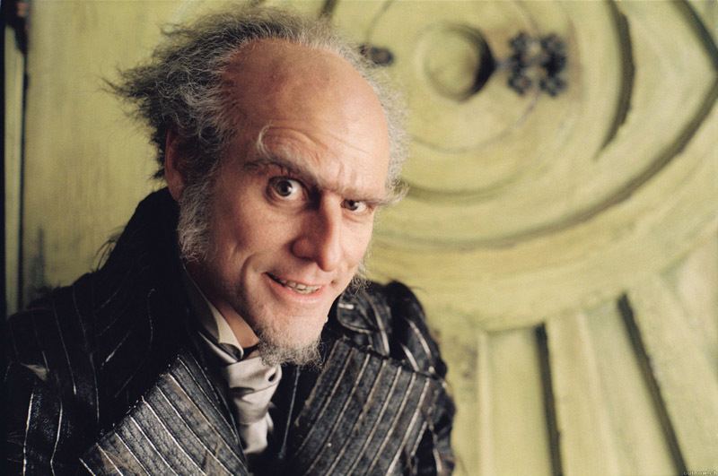

Родился 17 января 1962 года в городе Ньюмаркет (Канада).Джим Керри (полное имя Джеймс Юджин Керри) – канадо-американский комический актер, а также сценарист и продюсер. Известен широкому зрителю по фильмам «Маска», «Эйс Вентура», «Тупой и еще тупее», «Лжец, лжец», «Брюс Всемогущий», «Шоу Трумана», «Человек на Луне», «Вечное сияние чистого разума». Двукратный обладатель премии «Золотой глобус», многократный обладатель «MTV Movie Award», номинант на премию BAFTA. Мало кто может устоять перед его живой мимикой и мощной харизмой. Первый опыт выступлений на сцене Керри получил в 15 лет. Отец отвел его в местный клуб «Як-як», где Джиму удалось показать свой номер. Однако публика освистала будущую звезду Голливуда. После этого он на некоторое время замкнулся в себе. Когда финансовое положение семьи улучшилось, Керри решился вернуться на сцену. Он усовершенствовал номер, который был встречен зрителями с восторгом. Вскоре комик не просто стал звездой в «Як-як», а еще и начал получать деньги за выступления. Вдохновившись успехом, Джим отправился в США, где пошел на прослушивание для шоу Saturday Night Live, но услышал отказ. В последующие годы он еще неоднократно делал попытки попасть в труппу развлекательной программы, но они были неудачными. Экранная карьера Керри началась еще в молодости с участия в низкобюджетных телевизионных картинах, таких как «Резиновое лицо» и «Гора Куппер». Но первая волна популярности пришла после выхода ситкома «Утиная фабрика». В то время Джим неплохо зарабатывал и даже сумел перевезти в Лос-Анджелес родителей. Но год спустя шоу закрыли, из-за чего актер оказался на грани тяжелой депрессии. Но успех и мировая слава пришли к Керри в 1994 году после выхода ленты «Эйс Вентура: Розыск домашних животных». Результат превзошел все ожидания – в прокате лента собрала $ 100 млн, хоть сам актер за все усилия получил скромные $ 350 тыс. и оказался в немилости у критиков. Его даже номинировали на антипремию «Золотая малина». Признание пришло к Джиму позже, и Эйс Вентура занял почетное место в списке культовых персонажей.

Год производства: 1994
Страна: США
Жанр: комедия
Время фильма: 1 ч 47 мин
Возраст: 18+
О фильме:
Два полных придурка Ллойд Крисмас и Харри Данн пытаются нагнать красивую девушку Мэри Суонсон, чтобы вручить ей оставленный ею в аэропорту чемоданчик. Им невдомек, что Мэри оставила его специально, в качестве выкупа по договоренности с похитителями ее мужа. На переделанной в собаку машине двое недотёп пересекают Америку от Род-Айленда до Колорадо, где и находят обворожительную Мэри, в которую Ллойд уже успел втюриться без памяти.
Кинопоиск
Год производства: 1998
Страна: США
Жанр: драма, комедия
Время фильма: 1 ч 43 мин
Возраст: 18+
О фильме:
Представьте себе, что вы вдруг начинаете понимать, что все вокруг вас — декорации, а люди — актеры, притворяющиеся теми, кем они вам кажутся. Весь ваш мир оказывается большим телесериалом, где вы исполняете главную роль, даже не подозревая об этом. Вся ваша жизнь — результат работы автора телешоу, которое вот уже тридцать лет смотрит вся планета, начиная с момента вашего рождения. В такой ситуации оказался Труман, главный герой картины. Будет ли он продолжать жить в безопасном мире, где, как он теперь знает, у него практически нет свободы выбора, или все-таки выйдет из «игры» и станет сам хозяином своей судьбы, в которой его ждет не запланированная сценарием девушка?
Кинопоиск